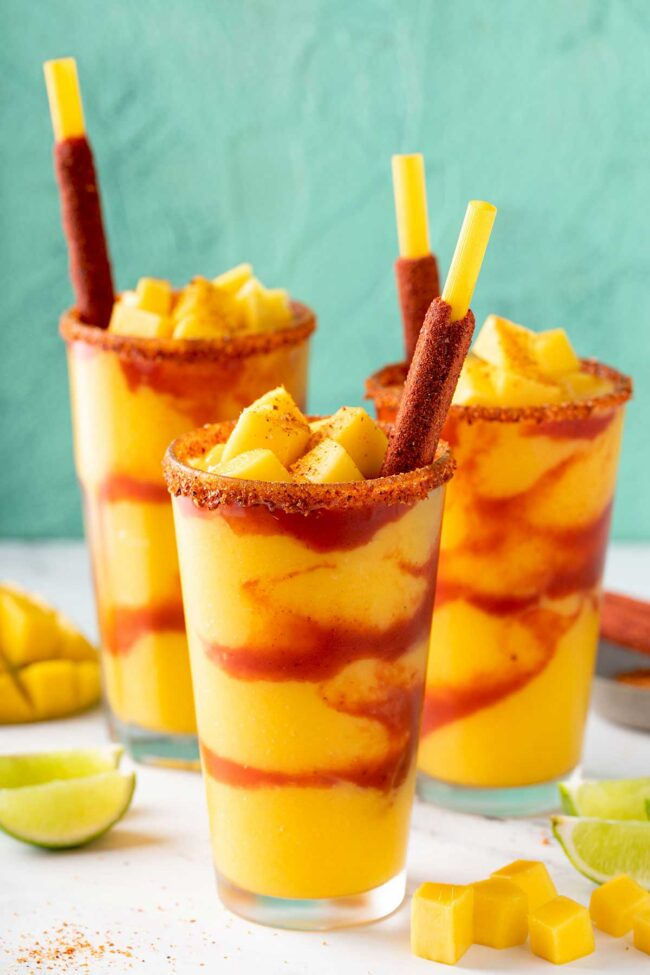

Mango Lassi

Description
Mango lassi is a yogurt-based drink, made from yogurt, milk, mango pulp (fresh, frozen, or canned mango pulp), sugar, and flavored with cardamom. Also known as Indian Mango Smoothie.
Ingredients
- 1 ½ cups mangos - peeled, seeded, chopped, and chilled
- 1 ½ cups plain yogurt
- ½ cup cold milk
- 2 tablespoons heavy cream
- 2 tablespoons confectioners' sugar
- ½ teaspoon ground cardamom
Steps
- Combine mangos, yogurt, milk, cream, confectioners' sugar, and cardamom in a blender; blend until smooth and frothy. Pour into glasses and serve immediately.
Home Page
Home